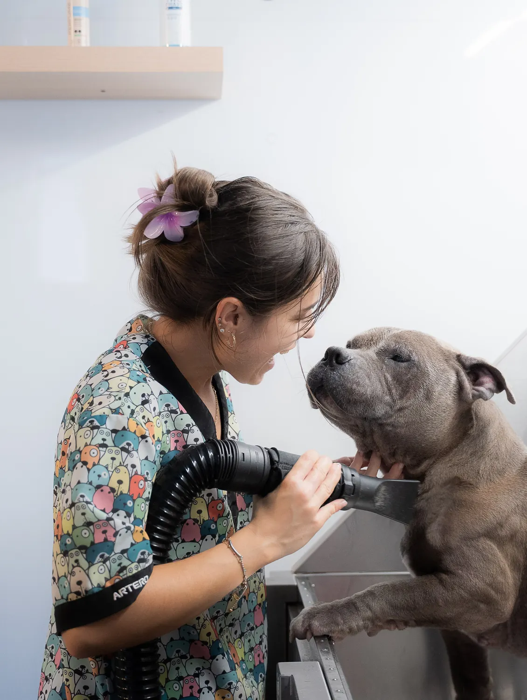
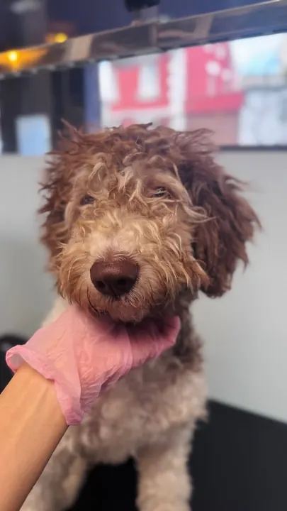
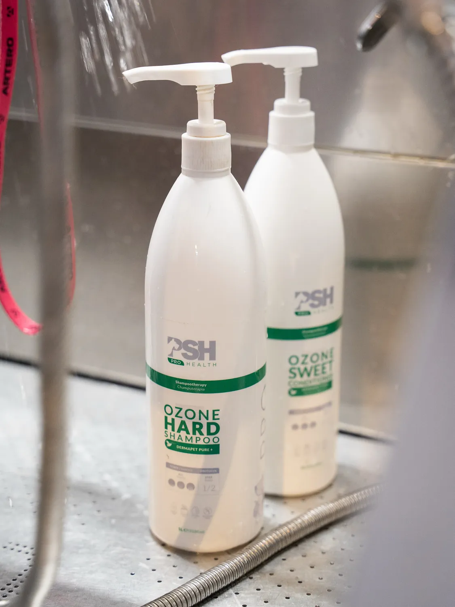
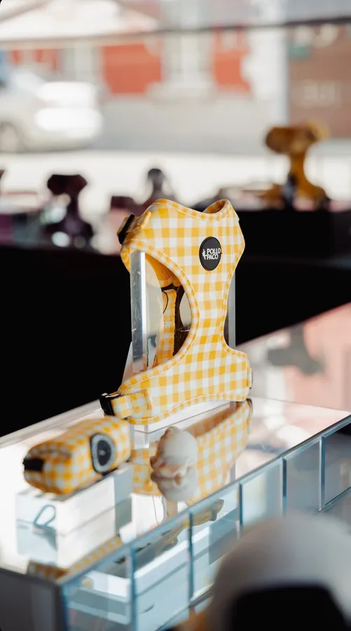
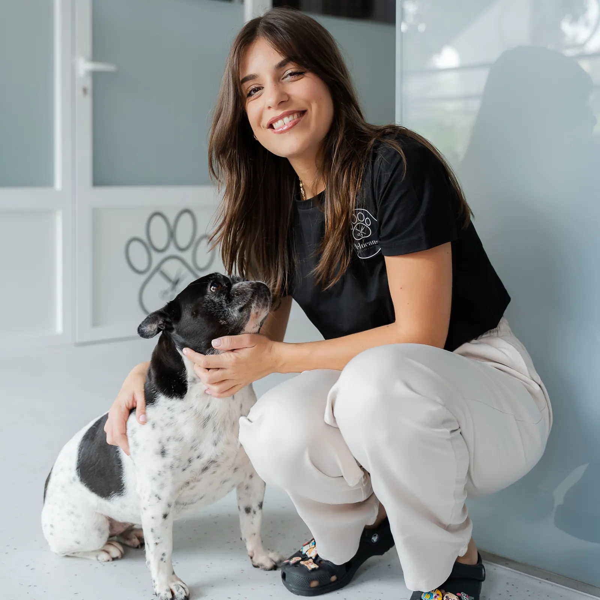

Corte a tesoira
Hai cortes que se ven bonitos. E cortes que, ademais, se viven cómodos. Atopamos o seu, tesoira a tesoira.
Do corte a tesoira ao baño de ozono: cada servizo faise un a un, sen gaiolas e con todo o tempo que o teu can precisa. Elixe o seu ou cóntanos e decidimos xuntos.


Filtra por tipo de coidado ou entra en calquera para ver como o facemos, que inclúe e a que cans vai dirixido.
 Corte a tesoiraUn corte pensado para o seu manto, a súa personalidade e a vosa vida xuntos.Estilismo
Corte a tesoiraUn corte pensado para o seu manto, a súa personalidade e a vosa vida xuntos.Estilismo StrippingTraballo manual para respectar a textura natural do manto.Estilismo
StrippingTraballo manual para respectar a textura natural do manto.Estilismo DeslanadoRetiramos o subpelo solto respectando a estrutura do manto.Manto e hixiene
DeslanadoRetiramos o subpelo solto respectando a estrutura do manto.Manto e hixiene Baño de ozonoUnha opción de coidado complementario, sempre adaptada á súa pel.Pel e benestar
Baño de ozonoUnha opción de coidado complementario, sempre adaptada á súa pel.Pel e benestar
DermocosméticaCosmética canina elixida para a súa pel, o seu pelo e a súa rutina.Pel e benestar Baño e coidado do mantoBaño, secado e cepillado con atención aos pequenos detalles.Manto e hixiene
Baño e coidado do mantoBaño, secado e cepillado con atención aos pequenos detalles.Manto e hixiene Corte de unllasRevisión e corte coidadoso, respectando os seus límites.Manto e hixiene
Corte de unllasRevisión e corte coidadoso, respectando os seus límites.Manto e hixiene
Alimentación especializadaOpcións de alimentación e unha conversa para elixir con criterio.Na casa
AsesoramentoConsellos prácticos de cepillado, cosmética e mantemento.Na casaA foto quédase e o texto avanza: percorre os nove coidados un a un.

Hai cortes que se ven bonitos. E cortes que, ademais, se viven cómodos. Atopamos o seu, tesoira a tesoira.
Unha técnica precisa para renovar o pelo maduro e coidar a identidade dos mantos duros.
Para eses días nos que parece que hai outro can no sofá. Coidamos a muda desde o manto.
Revisamos as súas necesidades antes de elixir o baño. A delicadeza comeza por saber que lle convén.
O produto axeitado cambia a experiencia do baño. Eliximos o coidado coa mesma atención que o corte.
O pracer de volver abrazalo recén bañado. E a tranquilidade de saber que estivo ben coidado.
Tamén coidamos o que non se ve a primeira vista. Un pequeno xesto de hixiene que merece toda a nosa atención.
Cóntanos que come, que lle gusta e que precisas. Axudámoste a coñecer as opcións dispoñibles.
Non precisas un caixón cheo de cepillos. Precisas saber cal usar, como e cando.
Por WhatsApp ou por teléfono. Cóntanos como é o teu can, que precisa e se ten algunha sensibilidade.
Cita previa e tempo só para el. Se é grande ou ten moito pelo, reservamos de máis.
Un a un, sen gaiolas, con pausas e orelleiras protectoras no secado se as precisa.
Explicámosche como manter o resultado e cada canto convén volver.
Tres preguntas e dicímosche por onde comezar. Sen rexistros: o resultado quédase na túa pantalla e, se queres, envíaslle a Shadia por WhatsApp.
«Porque unha boa perruquería canina non é só que saian guapos… tamén é coidar do seu benestar durante todo o proceso.»
— Shadia Cotelo
«Trato inmellorable. Tanto cos peludos como cos clientes. A miña cadeliña saíu, ademais de preciosa, encantada cos mimos recibidos en Pelucans. Sen dúbida volveremos.»
«Marabillosa e moi ben de prezo, a atención xenial e o trato cos peludos exquisito. Leva atendendo aos meus cans uns anos e sempre un 10.»
«Hoxe Jagger, o meu pastor alemán, fixo uso dos servizos de Pelucans e saíu moi satisfeito, igual ca min. Bonitas e coidadas instalacións, trato exquisito e bos prezos.»
Cada can necesita un tempo e un coidado distintos, por iso falamos antes de comezar.
O orzamento depende do tamaño, o estado do manto e o traballo necesario. Escríbenos por WhatsApp cunha foto recente do teu can e o servizo que buscas, e orientámoste.
Si, sempre. Reservamos un oco só para o teu can e o tempo que precise. Luns a venres de 9:30 a 13:30 e de 16:00 a 19:00; os sábados, con cita previa. Pide a túa no 604 207 678.
Non pasa nada. Cóntanos como é o seu pelo e que queres mellorar; revisamos contigo as opcións antes de reservar.
Si, e encántannos. Temos unha bañeira de aceiro inoxidable adaptada para razas xigantes e reservamos tempo de sobra: Bruce, o noso San Bernardo, lévase unha tarde enteira de mimos.
Usamos orelleiras protectoras para amortecer o ruído e facemos pausas. Avísanos ao reservar e adaptamos o ritmo.
Cóntanos como é, que lle gusta e que precisa. Do resto encargámonos nós, con calma.